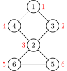
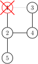

割点和桥
相关阅读：双连通分量，
割点和桥更严谨的定义参见 图论相关概念。
割点¶
对于一个无向图，如果把一个点删除后这个图的极大连通分量数增加了，那么这个点就是这个图的割点（又称割顶）。
如何实现？¶
如果我们尝试删除每个点，并且判断这个图的连通性，那么复杂度会特别的高。所以要介绍一个常用的算法：Tarjan。
首先，我们上一个图：
很容易的看出割点是 2，而且这个图仅有这一个割点。
首先，我们按照 DFS 序给他打上时间戳（访问的顺序）。

这些信息被我们保存在一个叫做 num 的数组中。
还需要另外一个数组 low，用它来存储不经过其父亲能到达的最小的时间戳。
例如 low[2] 的话是 1，low[5] 和 low[6] 是 3。
然后我们开始 DFS，我们判断某个点是否是割点的根据是：对于某个顶点 ，如果存在至少一个顶点 （ 的儿子），使得 ，即不能回到祖先，那么 点为割点。
另外，如果搜到了自己（在环中），如果他有两个及以上的儿子，那么他一定是割点了，如果只有一个儿子，那么把它删掉，不会有任何的影响。比如下面这个图，此处形成了一个环，从树上来讲它有 2 个儿子：

我们在访问 1 的儿子时候，假设先 DFS 到了 2，然后标记用过，然后递归往下，来到了 4，4 又来到了 3，当递归回溯的时候，会发现 3 已经被访问过了，所以不是割点。
更新 low 的伪代码如下：
1 2 3 | 如果 v 是 u 的儿子 low[u] = min(low[u], low[v]);
否则
low[u] = min(low[u], num[v]);
|
例题¶
例题代码
1 2 3 4 5 6 7 8 9 10 11 12 13 14 15 16 17 18 19 20 21 22 23 24 25 26 27 28 29 30 31 32 33 34 35 36 37 38 39 40 41 42 43 44 45 46 47 48 49 50 51 52 53 54 55 56 57 58 59 60 | /*
洛谷 P3388 【模板】割点（割顶）
*/
#include <bits/stdc++.h>
using namespace std;
int n, m; // n：点数 m：边数
int num[100001], low[100001], inde, res;
// num：记录每个点的时间戳
// low：能不经过父亲到达最小的编号，inde：时间戳，res：答案数量
bool vis[100001], flag[100001]; // flag: 答案 vis：标记是否重复
vector<int> edge[100001]; // 存图用的
void Tarjan(int u, int father) { // u 当前点的编号，father 自己爸爸的编号
vis[u] = true; // 标记
low[u] = num[u] = ++inde; // 打上时间戳
int child = 0; // 每一个点儿子数量
for (auto v : edge[u]) { // 访问这个点的所有邻居 （C++11）
if (!vis[v]) {
child++; // 多了一个儿子
Tarjan(v, u); // 继续
low[u] = min(low[u], low[v]); // 更新能到的最小节点编号
if (father != u && low[v] >= num[u] &&
!flag
[u]) // 主要代码
// 如果不是自己，且不通过父亲返回的最小点符合割点的要求，并且没有被标记过
// 要求即为：删了父亲连不上去了，即为最多连到父亲
{
flag[u] = true;
res++; // 记录答案
}
} else if (v != father)
low[u] =
min(low[u], num[v]); // 如果这个点不是自己，更新能到的最小节点编号
}
if (father == u && child >= 2 &&
!flag[u]) { // 主要代码，自己的话需要 2 个儿子才可以
flag[u] = true;
res++; // 记录答案
}
}
int main() {
cin >> n >> m; // 读入数据
for (int i = 1; i <= m; i++) { // 注意点是从 1 开始的
int x, y;
cin >> x >> y;
edge[x].push_back(y);
edge[y].push_back(x);
} // 使用 vector 存图
for (int i = 1; i <= n; i++) // 因为 Tarjan 图不一定连通
if (!vis[i]) {
inde = 0; // 时间戳初始为 0
Tarjan(i, i); // 从第 i 个点开始，父亲为自己
}
cout << res << endl;
for (int i = 1; i <= n; i++)
if (flag[i]) cout << i << " "; // 输出结果
return 0;
}
|
割边¶
和割点差不多，叫做桥。
对于一个无向图，如果删掉一条边后图中的连通分量数增加了，则称这条边为桥或者割边。严谨来说，就是：假设有连通图 ， 是其中一条边（即 ），如果 是不连通的，则边 是图 的一条割边（桥）。
比如说，下图中，
红色的边就是割边。
实现¶
和割点差不多，只要改一处： 就可以了，而且不需要考虑根节点的问题。
割边是和是不是根节点没关系的，原来我们求割点的时候是指点 是不可能不经过父节点 为回到祖先节点（包括父节点），所以顶点 是割点。如果 表示还可以回到父节点，如果顶点 不能回到祖先也没有另外一条回到父亲的路，那么 这条边就是割边。
代码实现¶
下面代码实现了求割边，其中，当 isbridge[x] 为真时，(father[x],x) 为一条割边。
1 2 3 4 5 6 7 8 9 10 11 12 13 14 15 16 17 18 19 20 21 22 23 24 | // C++ Version
int low[MAXN], dfn[MAXN], iscut[MAXN], dfs_clock;
bool isbridge[MAXN];
vector<int> G[MAXN];
int cnt_bridge;
int father[MAXN];
void tarjan(int u, int fa) {
father[u] = fa;
low[u] = dfn[u] = ++dfs_clock;
for (int i = 0; i < G[u].size(); i++) {
int v = G[u][i];
if (!dfn[v]) {
tarjan(v, u);
low[u] = min(low[u], low[v]);
if (low[v] > dfn[u]) {
isbridge[v] = true;
++cnt_bridge;
}
} else if (dfn[v] < dfn[u] && v != fa) {
low[u] = min(low[u], dfn[v]);
}
}
}
|
1 2 3 4 5 6 7 8 9 10 11 12 13 14 15 16 17 18 19 20 21 | # Python Version
low = [] * MAXN; dfn = [] * MAXN; iscut = [] * MAXN; dfs_clock = 0
isbridge = [False] * MAXN
G = [[0 for i in range(MAXN)] for j in range(MAXN)]
cnt_bridge = 0
father = [] * MAXN
def tarjan(u, fa):
father[u] = fa
low[u] = dfn[u] = dfs_clock
dfs_clock = dfs_clock + 1
for i in range(0, len(G[u])):
v = G[u][i]
if dfn[v] == False:
tarjan(v, u)
low[u] = min(low[u], low[v])
if low[v] > dfn[u]:
isbridge[v] = True
cnt_bridge = cnt_bridge + 1
elif dfn[v] < dfn[u] and v != fa:
low[u] = min(low[u], dfn[v])
|
练习¶
Tarjan 算法还有许多用途，常用的例如求强连通分量，缩点，还有求 2-SAT 的用途等。
build本页面最近更新：，更新历史
edit发现错误？想一起完善？ 在 GitHub 上编辑此页！
people本页面贡献者：Ir1d, sshwy, GavinZhengOI, Planet6174, ouuan, Marcythm, ylxmf2005
copyright本页面的全部内容在 CC BY-SA 4.0 和 SATA 协议之条款下提供，附加条款亦可能应用